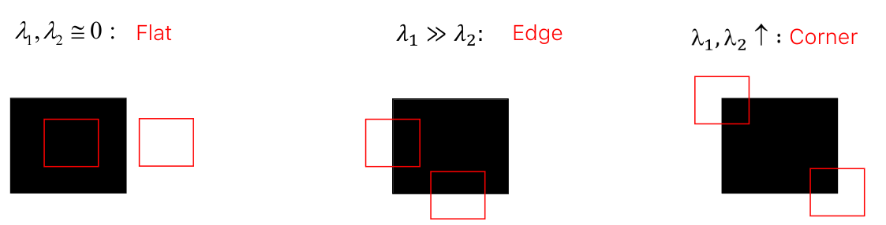

We may need an algorithm that finds corners in an image (e.g. for Local invariant feature
)
Harris corner detector
Harris&Stephens proposed to rely on a continuous formulation of the Moravec’s “error” function. We assume to shift the image with a generic, infinitesimal shift (Δx,Δy).
E(Δx,Δy)=x,y∑w(x,y)(I(x+Δx,y+Δy)−I(x,y))2
where w(x,y) is 1 in the pixel under evaluation, 0 otherwise. We can deploy Taylor’s expansion of the intensity function at (x, y):
f(x+Δx)I(x+Δx,y+Δy)I(x+Δx,y+Δy)−I(x,y)E(Δx,Δy)=[ΔxΔy]E(Δx,Δy)=f(x)+f′(x)Δx≅I(x,y)+∂x∂I(x,y)Δx+∂y∂I(x,y)Δy≅∂x∂I(x,y)Δx+∂y∂I(x,y)Δy=Ix(x,y)Δx+Iy(x,y)Δy⇒=x,y∑w(x,y)(Ix(x,y)Δx+Iy(x,y)Δy)2=x,y∑w(x,y)(Ix(x,y)2Δx2+Iy(x,y)2Δy2+2Ix(x,y)Iy(x,y)ΔxΔy)=x,y∑w(x,y)([ΔxΔy][Ix(x,y)2Ix(x,y)Iy(x,y)Ix(x,y)Iy(x,y)Iy(x,y)2][ΔxΔy])[∑x,yw(i,x)Ix(x,y)2∑x,yw(i,x)Ix(x,y)Iy(x,y)∑x,yw(i,x)Ix(x,y)Iy(x,y)∑x,yw(i,x)Iy(x,y)2][ΔxΔy]⟹=[ΔxΔy]M[ΔxΔy]
M encodes the local image structure around the considered pixel.
If we hypotize M diagonal ([λ100λ2]), we have:
E(Δx,Δy)=[ΔxΔy]M[ΔxΔy]=[ΔxΔy][λ100λ2][ΔxΔy]=λ1Δx2+λ2Δy2

The previous considerations have general validity as M is real and symmetric, and thus can always be diagonalized by a rotation of the image coordinate system
M=R[λ100λ2]RT
The columns of R are the orthogonal unit eigenvectors of M, λi the corresponding eigenvalues, RT is the rotation matrix that aligns the image axes to the eigenvectors of M.
=> We just compute the eigenvalues of M.
But computing the eigenvalue is costly, then, we can compute a more efficient function:
C=det(M)−k∗tr(M)2=λ1λ2−k(λ1+λ2)2
The Harris corner detection algorithm can thus be summarized as follows:
- Compute C at each pixel
- Select all pixels where C is higher than a chosen positive threshold (T)
- Within the previous set, detect as corners only those pixels that are local maxima of C (NMS
)
It is worth highlighting that the weighting function w(x,y) used by the Harris corner detector is Gaussian rather than Box-shaped, so to assign more weight to closer pixels and less weight to those farther away
Invariance properties
- Rotation: yes
- Additive bias: yes
- Multiplication bias: no
- scale: no